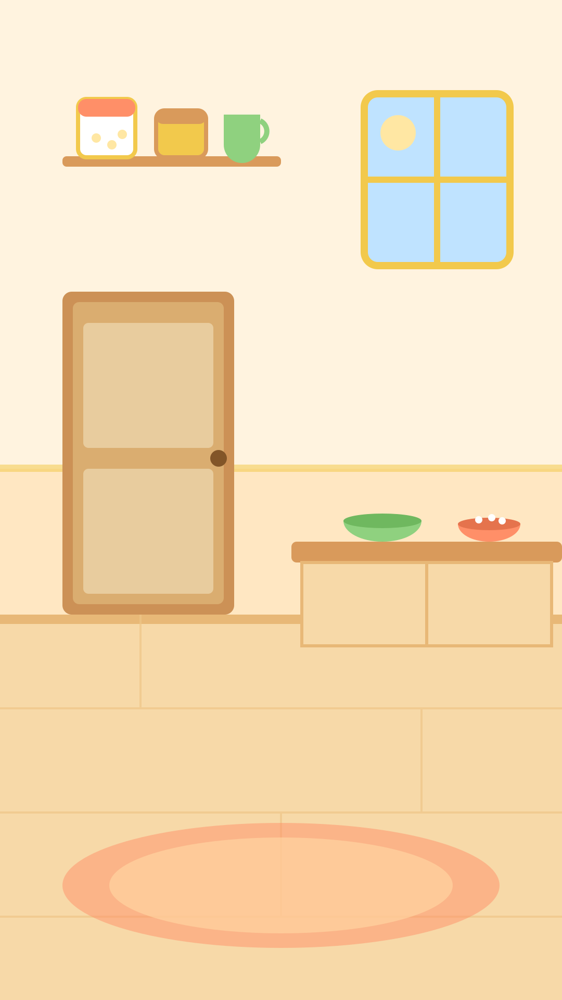

Johny Johny,
Yes Papa
Johny Johny, what are you doing in there?
Eating sugar, papa!
Am I allowed to?
Yes papa.
Johny Johny, what did you see in there?
Nobody, papa.
Will you tell papa?
No no.
Oh dear dear, what will you do?
Sugar will rot your teeth, papa!
I will tell your mama!
Johny Johny,Yes Papa
Follow for more nursery rhymes